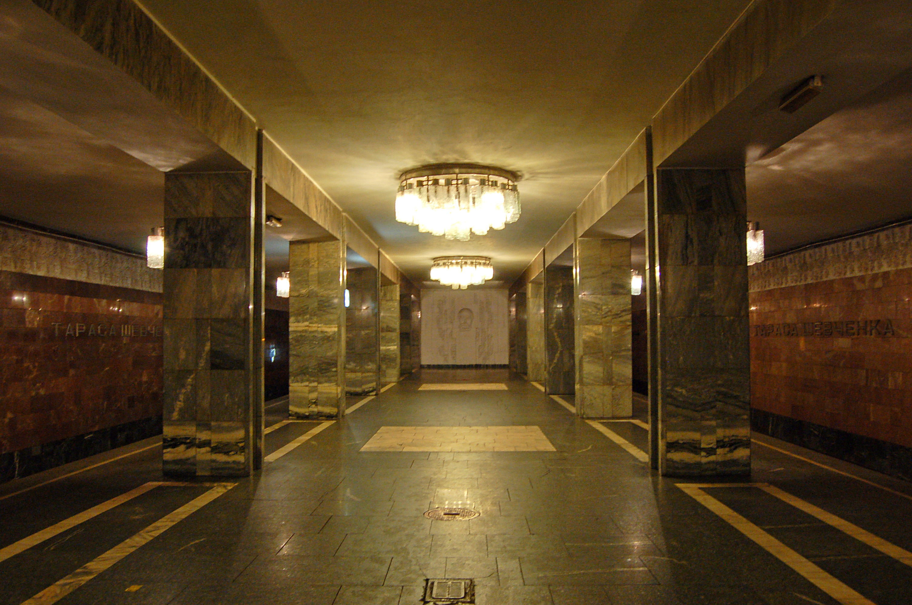

About
ENG 🇬🇧 -> JPN 🇯🇵 -> UKR 🇺🇦
[ENG]
Tarasa Shevchenka is the 19th station of the Kyiv subway system. It is located on the Obolonsko-Teremkivska line between the Pochayna and Kontraktova Ploshcha stations. It was opened on December 19, 1980. It is named in honor of Taras Shevchenko.
The design of the station is a three-bay shallow-built column with an island platform. The distance between the columns is increased - 6 meters instead of 4.
Track development: the station is without track development.
The designers made an attempt to introduce elements of Ukrainian flavor into the interior of the station, in particular, a ribbon depicting viburnum branches on top of the track walls, and a bas-relief of Kobzar on the red and blue background of the end wall of the central hall in an ornament of the same branches. The columns are widened in the shaft with a beam, which, like the columns, is faced with gray marble. The lighting is provided by glass sconces on the columns on the landing side and groups of glass lamps on the ceiling of the central hall. In the center of the track walls and above the staircase of the lobby, there are thematic compositions related to the life and work of the famous Ukrainian poet and artist.
The station has a single lobby combined with an underground passage to Mezhyhirska Street. There is no ground lobby.
[JPN]
タラサ・シェフチェンカ駅は、キーウ地下鉄の19番目の駅である。オボロンスコ・テレムキフスカ線のポチャイナ駅とコントラクトヴァ・プラシチャ駅の間にある。1980年12月19日に開業した。駅名はタラス・シェフチェンコにちなむ。
駅の構造は、島式ホームを持つ3スパンの浅い構造の柱である。柱と柱の間隔は4メートルから6メートルに広げられた。
軌道開発：この駅には軌道開発がない。
設計者は、駅構内にウクライナの色彩の要素を取り入れることを試みた。特に、線路の壁の上部にはビバーナムの枝を描いたリボンが描かれ、中央ホールの端の壁の赤と青の背景には、同じ枝の装飾でコブザルの浮き彫りが描かれている。円柱の根元には梁が伸びており、この梁も円柱と同じく灰色の大理石で覆われている。照明は、踊り場側の柱にあるガラスの燭台と、中央ホールの天井にあるガラスのランプのグループによって提供されている。線路の壁の中央とロビーの階段の上には、有名なウクライナの詩人・芸術家の生涯と作品に関連したテーマ別のコンポジションがある。
駅には、メジヒルスカ通りへの地下通路と一体化したロビーが1つある。地上ロビーはない。
[UKR]
«Тара́са Шевче́нка» — 19-та станція Київського метрополітену. Розташована на Оболонсько-Теремківській лінії між станціями «Почайна» та «Контрактова площа». Відкрита 19 грудня 1980 року. Названа на честь Тараса Шевченка.
Конструкція станції — колонна трипрогінна мілкого закладення з острівною платформою. Відстань між колонами збільшена — 6 метрів замість 4-х.
Колійний розвиток: станція без колійного розвитку.
Дизайнери зробили спробу внести в інтер'єр станції елементи українського колориту, зокрема, стрічка з зображенням гілочок калини поверх колійних стін, і барельєф Кобзаря на червоно-блакитному тлі торцевої стіни центрального залу в орнаменті з таких же гілочок. Колони розширені у створі з балкою, яка, як і колони, облицьована сірим мармуром. Освітлення — скляні бра на колонах з боку посадки і групи скляних світильників на стелі центрального залу. У центрі шляхових стін і над сходовим спуском вестибюля передбачені тематичні композиції, пов'язані з життям і діяльністю відомого українського поета і художника.
Станція з одним вестибюлем, суміщеним з підземним переходом на Межигірську вулицю. Наземний вестибюль відсутній.
Джерело: Вікіпедія
